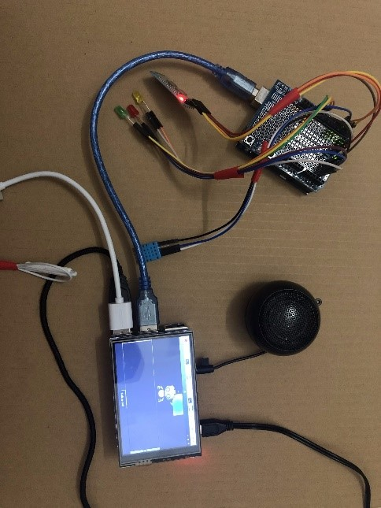

Actually, I have not tried big projects in Web Programming in particular and in Coding in general, so here are the projects I completed during my first 2 semesters at RMIT. Also, I'm taking an external website programming course, so I'm going to do a big website project, I'll update it on the next big assignment! I will post projects that have been completed and received positive comments and positive results below.
List of my projects
Computing device projects
Smart Trash Bin
Smart Assistant
Website Projects
Group Website Project 1
https://vnesetalkingbush.github.io/github_asm_2/
Group Website Project 2
https://vnesetalkingbush.github.io/IIT_asm_3/
This is a product I am quite satisfied with. I put all my heart into it. It is a product that was created when I studied Computer Systems at RMIT. This is a smart Microbit Trash that is controlled by voice through the application on the MIT App Inventor. Below is a demo video of the product.
As the name of our undertaking, Smart Assistant, we have made a little remote helper base on an AI application to help clients convey and control associated gadgets. I have utilized Speech Recognition (a package of Python) to perceive the client's voice and it assists the application with changing our discourse over to message. Then, the application can undoubtedly get what we demand and tackle it rapidly. This application upholds clients to look for data on Wikipedia, Search and play videos on Youtube, as well as Automatically play music on Spotify. Moreover, it interfaces with Arduino to control the light framework (like smart home) by the client's voice. Besides, it can get the temperature along with humidity through the DHT11 sensor, which is connected with Arduino.
In terms of website programming, I have gained a bit of experience by studying in an outside school. So, in the web projects of the subject Introduction to Information Technology, I have completed quite well 2 informational websites of my group (I have used skills in HTML, CSS, JavaScript as well as Bootstrap to complete them). Here are 2 links to those 2 sites.